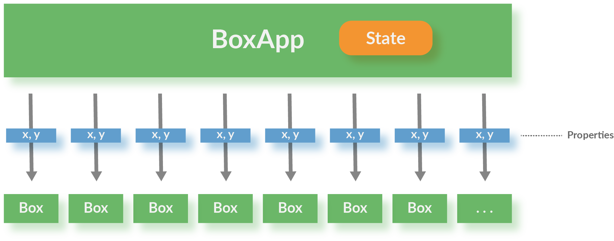
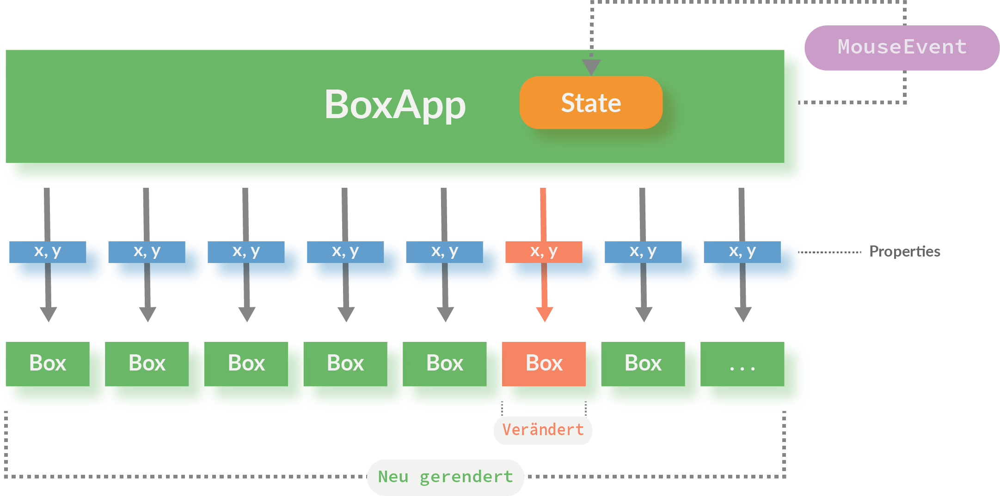
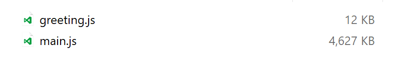
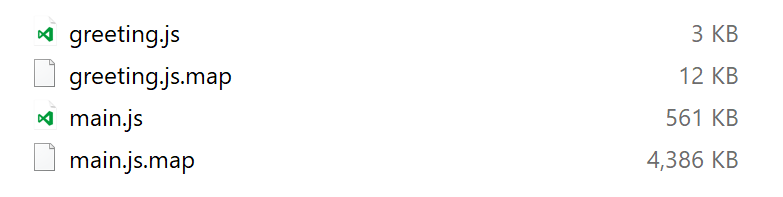
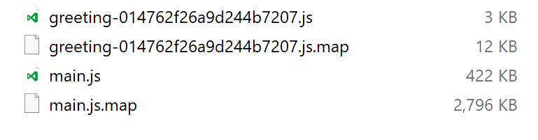

React Performance
Web Performance Meetup
Themen
Optimierungen (I): Rendering
Problem: React rendert oft zu viel
Beispiel: SVG Boxes

Eine einzelne Box mit D'n'D verschieben
SVG Boxes
Rendering aller Komponenten
Change Detection auf der Ebene des Virtual DOM
bei jeder Bewegung der Maus werden alle Boxen neu gerendert
Nicht direkt im DOM, sondern in einer leichtgewichtigen Datenstruktur (Virtual DOM)
Änderungen im echten DOM werden aus Änderungen im Virtual DOM errechnet
Change Detection auf der Ebene des Models
shouldComponentUpdate ist eine Lifecycle-Methode einer Komponente die diese Prozedur abkürzen kann
das alte Modell kann mit dem neuen verglichen werden
Das reduziert das Neu-Rendering auf genau die notwendigen Elemente
Macht nur Sinn, wenn der Check auf Modell-Änderung sehr billig ist, typischerweise ===
Die Box Component
class Box extends React.Component {
shouldComponentUpdate(nextProps) {
// simple check: every change to a box creates a new object
const changed = this.props.box !== nextProps.box;
return changed;
}
render() {
const {box} = this.props;
return <rect data-id={box.id} x={box.x} y={box.y}
width="10" height="10"
stroke="black" fill="transparent" strokeWidth="1"/>;
}
}
Naiver Code für Modifikation einer Box
updateBox(id, x, y) {
const {boxes} = this.state;
const modifiedBox = {
id,
x,
y
};
// https://developer.mozilla.org/en-US/docs/Web/JavaScript/
// Reference/Global_Objects/Array/slice
const boxesBefore = boxes.slice(0, id);
const boxesAfter = boxes.slice(id + 1);
const modifiedBoxes = [...boxesBefore, modifiedBox, ...boxesAfter];
this.setState({
boxes: modifiedBoxes
});
}
Immutable.js
Immutable persistent data collections for Javascript which increase efficiency and simplicity.
http://facebook.github.io/immutable-js/
- Bietet List, Set, Map, etc.
- Jede Modifikaton einer Collection erzeugt ein neues Collection Objekt
- Kopiert nicht die komplette Collection, sondern effiziente Erzeugung mittels Persistent Data Structures
Mit immutable.js
import {List} from 'immutable';
this.state = {
boxes: List(boxes)
};
updateBox(id, x, y) {
const {boxes} = this.state;
const modifiedBox = {
id,
x,
y
};
const modifiedBoxes = boxes.set(id, modifiedBox);
this.setState({
boxes: modifiedBoxes
});
}
Optimierungen (II): Build
Kudos an Webpack
Jeder kann ein Sponsor werden
Produktionsbuild
Minifizieren, Optimieren und alle React-Warnungen herauskompilieren:
webpack --optimize-minimize --define process.env.NODE_ENV=\"'production'\"
Oder als Kurzform:
webpack -p
https://webpack.js.org/guides/production-build/
SourceMaps in eigene Datei schreiben (Webpack Konfiguration):
devtool: 'source-map'
Build-Optimierungen
"Tree Shaking": Entfernt toten Code aus dem generierten JavaScript File- Reduziert die Größe der Ausgabedatei
- Verfügbar in Webpack 2.x
- Automatisch eingeschaltet, wenn mit
-paufgerufen - Arbeitet auf Basis statischer Code-Analyse der ES6 Imports und Exports
- Anpassung in
.babelrc:"presets": [["es2015", { "modules": false }] - https://webpack.js.org/guides/tree-shaking/
Code Splitting
Asynchrones Nachladen von Modulenhttps://webpack.js.org/guides/code-splitting-async/
- Erlaubt das dynamische Nachladen von Code-Teilen
- So kann am Anfang für eine schnelle Ladezeit nur eine Minimalversion ausgespielt werden
- Basiert auf dynamic import, der bereits in Stage 3 ist
- Weitere Teile können unmittelbar oder erst nach Nutzerinteraktion nachgeladen werden
Nachladen von React-Komponenten
- Erfordert die Darstellung von Platzhaltern, bis die eigentliche Komponente da ist
- Wenn die Komponente da ist, muss die umschließende Komponente neu dargestellt werden
- forceUpdate erzwingt ein Neuladen
class AsyncComponent extends React.Component {
componentDidMount() {
import(/* webpackChunkName: "component" */ './Component')
.then(ComponentModule => {
this.Component = ComponentModule.default;
this.forceUpdate();
});
}
render() {
return this.Component ?
<this.Component /> : <span>Loading...</span>;
}
}
Fertige Lösung: React Loadable
Externals
Allgemeine Bibliotheken können von CDNs geladen werden und landen nicht im Webpack build
Vorteil: Caching (sowohl im Browser als auch in mittleren Schichten), mehrere parallele Requests
externals: {
"react": "React",
"react-dom": "ReactDOM",
"prop-types": "PropTypes",
"d3": "d3",
"nvd3": "nv"
}
Dev-Build Größe: Ohne Optimierungen
Prod-Build Größe #1: Mit allen Abhängigkeiten
Prod-Build Größe #2: Ohne React
Prod-Build Größe #3: Ohne externe Abhängigkeiten (D3, NVD3)